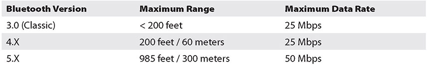
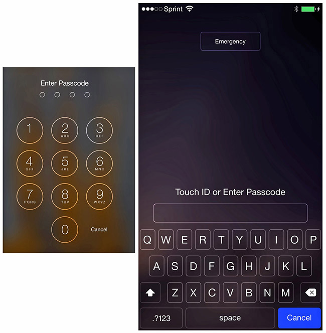

Table of Contents for
CompTIA Security+ All-in-One Exam Guide, Sixth Edition (Exam SY0-601)), 6th Edition
- Cover (01:09 mins)
- Title Page (01:09 mins)
- Copyright Page (03:27 mins)
- Dedication (01:09 mins)
- About the Authors (04:36 mins)
- Contents (19:33 mins)
- Preface (02:18 mins)
- Acknowledgments (01:09 mins)
- Introduction (12:39 mins)
-
Part I Threats, Attacks, and Vulnerabilities (01:09 mins)
- Chapter 1 Social Engineering Techniques (35:39 mins)
- Chapter 2 Type of Attack Indicators (37:57 mins)
- Chapter 3 Application Attack Indicators (33:21 mins)
- Chapter 4 Network Attack Indicators (39:06 mins)
- Chapter 5 Threat Actors, Vectors, and Intelligence Sources (44:51 mins)
- Chapter 6 Vulnerabilities (31:03 mins)
- Chapter 7 Security Assessments (23:00 mins)
- Chapter 8 Penetration Testing (25:18 mins)
-
Part II Architecture and Design (01:09 mins)
- Chapter 9 Enterprise Security Architecture (26:27 mins)
- Chapter 10 Virtualization and Cloud Security (25:18 mins)
- Chapter 11 Secure Application Development, Deployment, and Automation Concepts (27:36 mins)
- Chapter 12 Authentication and Authorization (33:21 mins)
- Chapter 13 Cybersecurity Resilience (39:06 mins)
- Chapter 14 Embedded and Specialized Systems (41:24 mins)
- Chapter 15 Physical Security Controls (49:27 mins)
- Chapter 16 Cryptographic Concepts (42:33 mins)
-
Part III Implementation (01:09 mins)
- Chapter 17 Secure Protocols (20:42 mins)
- Chapter 18 Host and Application Security (46:00 mins)
- Chapter 19 Secure Network Design (67:51 mins)
- Chapter 20 Wireless Security (25:18 mins)
- Chapter 21 Secure Mobile Solutions (43:42 mins)
- Chapter 22 Implementing Cloud Security (24:09 mins)
- Chapter 23 Identity and Account Management Controls (33:21 mins)
- Chapter 24 Implement Authentication and Authorization (37:57 mins)
- Chapter 25 Public Key Infrastructure (55:12 mins)
- Part IV Operations and Incident Response (01:09 mins)
- Part V Governance, Risk, and Compliance (01:09 mins)
- Part VI Appendixes and Glossary (01:09 mins)
- Glossary (65:33 mins)
- Index (67:51 mins)
CHAPTER 21
Secure Mobile Solutions
In this chapter, you will
• Understand the connection methods of mobile devices
• Understand the different types of mobile devices and their management
• Be introduced to mobile device policies and procedures
• Examine some deployment models of mobile devices
There has been an amazing convergence of business and individual usage of mobile devices. The convergence of cloud storage capabilities and Software as a Service (SaaS) is dramatically changing the landscape of mobile device usage. The ubiquitous presence of mobile devices and the need for continuous data access across multiple platforms have led to significant changes in the way mobile devices are being used for personal and business purposes. In the past, companies provided mobile devices to their employees for primarily business usage, but they were available for personal usage. With continuously emerging devices and constantly changing technologies, many companies are allowing employees to bring their own devices for both personal and business usage.
Certification Objective This chapter covers CompTIA Security+ exam objective 3.5: Given a scenario, implement secure mobile solutions.
Connection Methods and Receivers
Mobile devices, by their mobile nature, require a non-wired means of connection to a network. Typically, this connection on the enterprise side is via the Internet, but on the mobile device side a wide range of options exist for connectivity. Where and how mobile devices connect to a network can be managed by the enterprise by architecting the mobile connection aspect of its wireless network. This section will cover the common methods of connecting, including cellular, Wi-Fi, Bluetooth, NFC, infrared, and USB. The connection methods of point-to-point and point-to-multipoint are explained. Specialized receivers, such as GPS and RFID, are covered at the end of the section.
Cellular
Cellular connections use mobile telephony circuits, today typically fourth-generation (4G) or LTE in nature, although some 3G services still exist. One of the strengths of cellular is that robust nationwide networks have been deployed, making strong signals available virtually anywhere with reasonable population density. The corresponding weakness is that gaps in cellular service still exist in remote areas.
As this book is being written, the telecommunications world is moving to 5G, the newest form of cellular. This change will occur in densely populated areas first and then move across the globe. 5G is more than just a newer, faster network; it is a redesign to improve network communications through greater throughput, lower latency, better quality-of-service controls, and service differentiations. It is designed to handle streaming video downloads, standard audio calls, and data transfers from a myriad of smaller Internet of Things (IoT) devices, all with appropriate service levels. 5G will enable network services that facilitate the move to widespread data connectivity and transfers over the cellular networks. 5G is much more than just a better cellphone; it is the network for the data connectivity era.
Wi-Fi
Wi-Fi refers to the radio communication methods developed under the Wi-Fi Alliance. These systems exist on 2.4- and 5-GHz frequency spectrums, and networks are constructed by both the enterprise you are associated with and third parties. This communication methodology is ubiquitous with computing platforms and is relatively easy to implement and secure. Securing Wi-Fi networks is covered extensively in Chapter 20, “Wireless Security.”
Bluetooth
Bluetooth is a short-to-medium range, low-power wireless protocol that transmits in the 2.4-GHz band, which is the same band used for 802.11. The original concept for this short-range (approximately 32 feet) wireless protocol is to transmit data in personal area networks (PANs). Bluetooth transmits and receives data from a variety of devices, the most common being mobile phones, laptops, printers, and audio devices. The mobile phone has driven a lot of Bluetooth growth and has even spread Bluetooth into new cars as a mobile phone hands-free kit. Advances in transmitter power, antenna gain, and operating environment uses have expanded the range up to 3800 meters in some outdoor applications.
Bluetooth has gone through several releases. Version 1.1 was the first commercially successful version, with version 1.2 released in 2007 and correcting some of the problems found in 1.1. Version 1.2 allows speeds up to 721 Kbps and improves resistance to interference. Version 1.2 is backward compatible with version 1.1. With the rate of advancement and the life of most tech items, Bluetooth 1 series is basically extinct. Bluetooth 2.0 introduced enhanced data rate (EDR), which allows the transmission of up to 3.0 Mbps. Bluetooth 3.0 has the capability to use an 802.11 channel to achieve speeds up to 24 Mbps. The current version is the Bluetooth 4.0 standard, with support for three modes: Classic, High Speed, and Low Energy.
Bluetooth 4 introduced a new method to support collecting data from devices that generate data at a very low rate. Some devices, such as medical devices, may only collect and transmit data at low rates. This feature, called Bluetooth Low Energy (BLE), was designed to aggregate data from various sensors, like heart rate monitors, thermometers, and so forth, and carries the commercial name Bluetooth Smart. Bluetooth 5 continues the improvements of BLE, increasing BLE’s data rate and range.
As Bluetooth became popular, people started trying to find holes in it. Bluetooth features easy configuration of devices to allow communication, with no need for network addresses or ports. Bluetooth uses pairing to establish a trust relationship between devices. To establish that trust, the devices advertise capabilities and require a passkey. To help maintain security, most devices require the passkey to be entered into both devices; this prevents a default passkey–type attack. The Bluetooth’s protocol advertisement of services and pairing properties is where some of the security issues start. Bluetooth should always have discoverable mode turned off unless you’re deliberately pairing a device. The following table displays Bluetooth versions and speeds.

In the Bluetooth versions of 5.X, different data rates correspond to differing ranges, with higher rates at lower ranges supporting more data-rich devices, and lower rates having longer ranges to support lower-data-rate IoT devices. Bluetooth 5 uses a different frequency spectrum, requiring new hardware and limiting backward compatibility, but it is designed for local networks of the future with low power consumption, inexpensive hardware, small implementations, and scalable data rates versus range considerations.
NFC
Near field communication (NFC) is a set of wireless technologies that enables smartphones and other devices to establish radio communication when they are within close proximity to each other—typically a distance of 10 cm (3.9 in) or less. This technology did not see much use until recently when it started being employed to move data between cell phones and in mobile payment systems. NFC is likely to become a high-use technology in the years to come as multiple uses exist for the technology, and the next generation of smartphones is sure to include this as a standard function. Currently, NFC relies to a great degree on its very short range for security, although apps that use it have their own security mechanisms as well.
Infrared
Infrared (IR) is a band of electromagnetic energy just beyond the red end of the visible color spectrum. IR has been used in remote-control devices for years. IR made its debut in computer networking as a wireless method to connect to printers. Now that wireless keyboards, wireless mice, and mobile devices exchange data via IR, it seems to be everywhere. IR can also be used to connect devices in a network configuration, but it is slow compared to other wireless technologies. IR cannot penetrate walls but instead bounces off them. Nor can it penetrate other solid objects; therefore, if you stack a few items in front of the transceiver, the signal is lost. Because IR can be seen by all in range, any desired security must be on top of the base transmission mechanism.
USB
Universal Serial Bus (USB) has become the ubiquitous standard for connecting devices with cables. Mobile phones can transfer data and charge their battery via USB. Laptops, desktops, even servers have USB ports for a variety of data connection needs. Many devices, such as phones, tablets, and IoT devices, also use USB ports, although many are moving to the newer and smaller USB type C (USB-C) connector. USB ports have greatly expanded users’ ability to connect devices to their computers. USB ports automatically recognize a device being plugged into the system and usually work without the user needing to add drivers or configure software. This has spawned a legion of USB devices, from music players to peripherals to storage devices—virtually anything that can consume or deliver data connects via USB.
The most interesting of these devices, for security purposes, are the USB flash memory–based storage devices. USB drive keys, which are basically flash memory with a USB interface in a device typically about the size of your thumb, provide a way to move files easily from computer to computer. When plugged into a USB port, these devices automount and behave like any other drive attached to the computer. Their small size and relatively large capacity, coupled with instant read-write capability, present security problems. They can easily be used by an individual with malicious intent to conceal the removal of files or data from the building or to bring malicious files into the building and onto the company network.
USB connectors come in a wide range of sizes and shapes. For mobile use, there is USB mini, USB micro, and now USB-C, which is faster and reversible (does not care which side is up). There are also type A and type B connectors, with different form factors. The original USB provided data rates up to 480 Mbps, with USB 3 raising it to 5 Gbps, 3.1 to 10 Gbps, and 3.2 to 20 Gbps. USB 4 provides speeds up to 40 Gbps.
Point-to-Point
Radio signals travel outward from an antenna, and eventually are received by a receiving antenna. Point-to-point communications are defined as communications with one endpoint on each end—a single transmitter talking to a single receiver. This terminology transferred to networking, where a communications channel between two entities in isolation is referred to as point-to-point. Examples of point-to-point communications include Bluetooth, where this is mandated by protocol, and USB, where it is mandated by physical connections.
Point-to-Multipoint
Point-to-multipoint communications have multiple receivers for a transmitted signal. When a message is sent in broadcast mode, it has multiple receivers and is called a point-to-multipoint communication. Most radio-based and networked systems are potentially point-to-multipoint, from a single transmitter to multiple receivers, limited only by protocols.

EXAM TIP Remember that a point-to-point connection is between two devices (one to one) while point-to-multipoint connections are one (device) to many (devices).
Global Positioning System (GPS)
The Global Positioning System (GPS) is a series of satellites that provide nearly global coverage of highly precise time signals that, when multiple signals are combined, can produce precise positional data in all three dimensions. GPS receivers, operating in the 6-GHz band, are small, cheap, and have been added to numerous mobile devices, becoming nearly ubiquitous. The ability to have precise time, precise location, and, using differential math, precise speed has transformed many mobile device capabilities. GPS enables geolocation, geofencing, and a whole host of other capabilities.
RFID
Radio frequency identification (RFID) tags are used in a wide range of use cases. From tracking devices to tracking keys, the unique serialization of these remotely sensible devices has made them useful in a wide range of applications. RFID tags come in several different forms and can be classified as either active or passive. Active tags have a power source, whereas passive tags utilize the RF energy transmitted to them for power. RFID tags are used as a means of identification and have the advantage over bar codes that they do not have to be visible, just within radio wave range—typically centimeters to 200 meters, depending on tag type. RFID tags are used in a range of security situations, including contactless identification systems such as smart cards.
RFID tags have multiple security concerns; first and foremost, because they are connected via RF energy, physical security is a challenge. Security was recognized as an important issue for RFID tag systems because they form a means of identification and there is a need for authentication and confidentiality of the data transfers. Several standards are associated with securing the RFID data flow, including ISO/IEC 18000 and ISO/IEC 29167 for cryptography methods to support confidentiality, untraceability, tag and reader authentication, and over-the-air privacy, whereas ISO/IEC 20248 specifies a digital signature data structure for use in RFID systems.
Several different attack types can be performed against RFID systems. The first is against the RFID devices themselves—the chips and readers. A second form of attack goes against the communication channel between the device and the reader. The third category of attack is against the reader and back-end system. This last type is more of a standard IT/IS attack, depending on the interfaces used (web, database, and so on) and therefore is not covered any further. Attacks against the communication channel are relatively easy because the radio frequencies are known and devices exist to interface with tags. Two main attacks are replay and eavesdropping. In a replay attack, the RFID information is recorded and then replayed later; in the case of an RFID-based access badge, it could be read in a restaurant from a distance and then replayed at the appropriate entry point to gain entry. In the case of eavesdropping, the data can be collected, monitoring the movement of tags for whatever purpose needed by an unauthorized party. Both of these attacks are easily defeated using the aforementioned security standards.
If eavesdropping is possible, then what about man-in-the-middle attacks? These are certainly possible because they would be a combination of a sniffing (eavesdropping) action, followed by a replay (spoofing) attack. This leads to the question as to whether RFID can be cloned. And again, the answer is yes, if the RFID information is not protected via a cryptographic component.
EXAM TIP The various mobile device connection methods are conducive to performance-based questions, which means you need to pay attention to the scenario presented and choose the best connection methodology. Consider data rate, purpose, distances, and so forth in picking the best choice.
Mobile Device Management (MDM)
Knowledge of mobile device management (MDM) concepts is essential in today’s environment of connected devices. MDM began as a marketing term for a collective set of commonly employed protection elements associated with mobile devices. When it’s viewed as a comprehensive set of security options for mobile devices, every corporation should have and enforce an MDM policy. The policy should require the following:
• Device locking with a strong password
• Encryption of data on the device
• Device locking automatically after a certain period of inactivity
• The capability to remotely lock the device if it is lost or stolen
• The capability to wipe the device automatically after a certain number of failed login attempts
• The capability to remotely wipe the device if it is lost or stolen
Password policies should extend to mobile devices, including lockout and, if possible, the automatic wiping of data. Corporate policy for data encryption on mobile devices should be consistent with the policy for data encryption on laptop computers. In other words, if you don’t require encryption of portable computers, then should you require it for mobile devices? There is not a uniform answer to this question because mobile devices are much more mobile in practice than laptops, and more prone to loss. This is ultimately a risk question that management must address: what is the risk and what are the costs of the options employed? This also raises a bigger question: which devices should have encryption as a basic security protection mechanism? Is it by device type or by user based on what data would be exposed to risk? Fortunately, MDM solutions exist, making the choices manageable.
EXAM TIP Mobile device management (MDM) is a marketing term for a collective set of commonly employed protection elements associated with mobile devices. In enterprise environments, MDM allows device enrollment, provisioning, updating, tracking, policy enforcement, and app management capabilities.
Application Management
Mobile devices use applications to perform their data processing. The method of installing, updating, and managing the applications is done though a system referred to as application management software. Different vendor platforms have different methods of managing this functionality, with the two major players being the Google Store for Android devices and the Apple App Store for iOS devices. Both Apple and Android devices have built-in operations as part of their operating system (OS) to ensure seamless integration with their respective stores and other MDM solutions.
Content Management
Applications are not the only information moving to mobile devices. Content is moving as well, and organizations need a means of content management for mobile devices. For instance, it might be fine to have, and edit, some types of information on mobile devices, whereas other, more sensitive information should be blocked from mobile device access. Content management is the set of actions used to control content issues, including what content is available and to what apps, on mobile devices. Most organizations have a data ownership policy that clearly establishes their ownership rights over data, regardless of whether the data is stored on a device owned by the organization or a device owned by the employee. But enterprise content management goes a step further, examining what content belongs on specific devices and then using mechanisms to enforce these rules. Again, MDM solutions exist to assist in this security issue with respect to mobile devices.
Remote Wipe
Today’s mobile devices are ubiquitous and are very susceptible to loss and theft. When enterprise data exists on these devices, management of the data, even if the device is lost, is a concern. Further, it is unlikely that a lost or stolen device will be recovered by the owner, thus making even encrypted data stored on a device more vulnerable to decryption. If the thief can have your device for a long time, they can take all the time they want to try to decrypt your data. Therefore, many companies prefer to just remotely wipe a lost or stolen device. Remote wiping a mobile device typically removes data stored on the device and resets the device to factory settings. There is a dilemma in the use of BYOD devices that store both personal and enterprise data. Wiping the device usually removes all data, both personal and enterprise. Therefore, a corporate policy that requires wiping a lost device may mean the device’s user loses personal photos and data. The software controls for separate data containers, one for business and one for personal, have been proposed but are not a mainstream option yet.
For most devices, remote wipe can only be managed via apps on the device, such as Outlook for e-mail, calendar and contacts, and MDM solutions for all data. For Apple and Android devices, the OS also has the ability to set the device up for remote locking and factory reset, which effectively wipes the device.
Geofencing
Geofencing is the use of the Global Positioning System (GPS) and/or radio frequency identification (RFID) technology to create a virtual fence around a particular location and detect when mobile devices cross the fence. This enables devices to be recognized by others, based on location, and have actions taken. Geofencing is used in marketing to send messages to devices that are in a specific area, such as near a point of sale, or just to count potential customers. Geofencing has been used for remote workers, notifying management when they have arrived at remote work sites, allowing things like network connections to be enabled for them. The uses of geofencing are truly only limited by one’s imagination.
Turning off geofencing is possible via the device. On Apple devices, just turn off location services. Although to completely prevent tracking of the device, you must turn off the radio using Airplane mode.
Geolocation
Most mobile devices are now capable of using GPS for tracking device location. Many apps rely heavily on GPS location, such as device-locating services, mapping applications, traffic monitoring apps, and apps that locate nearby businesses such as gas stations and restaurants. Such technology can be exploited to track movement and location of the mobile device, which is referred to as geolocation. This tracking can be used to assist in the recovery of lost devices.
EXAM TIP Know the difference between geofencing and geolocation. These make great distractors.
Screen Locks
Most corporate policies regarding mobile devices require the use of the mobile device’s screen-locking capability. This usually consists of entering a passcode or PIN to unlock the device. It is highly recommended that screen locks be enforced for all mobile devices. Your policy regarding the quality of the passcode should be consistent with your corporate password policy. However, many companies merely enforce the use of screen-locking. Thus, users tend to use convenient or easy-to-remember passcodes. Some devices allow complex passcodes. As shown in Figure 21-1, the device screen on the left supports only a simple iOS passcode, limited to four numbers, while the device screen on the right supports a passcode of indeterminate length and can contain alphanumeric characters.

Figure 21-1 iOS lock screens
Some more advanced forms of screen locks work in conjunction with device wiping. If the passcode is entered incorrectly a specified number of times, the device is automatically wiped. Apple has made this an option on iOS devices. Apple also allows remote locking of a device from the user’s iCloud account. Android devices have a wide range of options, including the use of apps as screen locks.
EXAM TIP Mobile devices require basic security mechanisms of screen locks, lockouts, device wiping, and encryption to protect sensitive information contained on them.
Push Notification Services
Push notification services are services that deliver information to mobile devices without a specific request from the device. Push notifications are used by a lot of apps in mobile devices to indicate that content has been updated. Push notification methods are typically unique to the platform, with Apple Push Notification service for Apple devices and Android Cloud to Device Messaging as examples. Many other back-end server services have similar server services for updating their content. As push notifications enable the movement of information from external sources to the device, this has some security implications, such as device location, and potential interaction with the device. For instance, it is possible to push the device to emit a sound, even if the sound is muted on the device.
Passwords and PINs
Passwords and PINs are common security measures used to protect mobile devices from unauthorized use. These are essential tools and should be used in all cases and mandated by company policy. The rules for passwords covered throughout this book apply to mobile devices as well; in fact, maybe even more so. Having a simple gesture-based swipe on the screen as a PIN can at times be discovered by looking at the oil pattern on the screen. If the only swipes are for unlocking the phone, then the pattern can be seen, and security is lost via this method. Either cleaning or dirtying the whole screen is the obvious solution.
Biometrics
Biometrics are used across a wide range of mobile devices as a means of access control. Many of these devices have less-than-perfect recognition, and various biometric sensors have proven to be hackable, as demonstrated in many security presentations at conferences. The newest biometric method, facial recognition, is based on a camera image of the user’s face while they are holding their phone. Because these biometric sensors have been shown to be bypassable, they should be considered convenience features, not security features. Management policies should reflect this fact and should dictate that these methods not be relied on for securing important data.
Context-Aware Authentication
Context-aware authentication is the use of contextual information—who the user is, what resource they are requesting, what machine they are using, how they are connected, and so on—to make the authentication decision as to whether to permit the user access to the requested resource. The goal is to prevent unauthorized end users, devices, or network connections from being able to access corporate data. This approach can be used, for example, to allow an authorized user to access network-based resources from inside the office but deny the same user access if they are connecting via a public Wi-Fi network.
Containerization
Containerization on mobile devices refers to dividing the device into a series of containers—one container holding work-related materials, the other personal. The containers can separate apps, data—virtually everything on the device. Some mobile device management (MDM) solutions support remote control over the work container. This enables a much stronger use case for mixing business and personal matters on a single device. Most MDM solutions offer the ability to encrypt the containers, especially the work-related container, thus providing another layer of protection for the data.
Storage Segmentation
On mobile devices, it can be very difficult to keep personal data separate from corporate data. Storage segmentation is similar to containerization in that it represents a logical separation of the storage in the unit. Some companies have developed capabilities to create separate virtual containers to keep personal data separate from corporate data and applications. For devices that are used to handle highly sensitive corporate data, this form of protection is highly recommended.
EXAM TIP Remember that containerization and storage segmentation are technologies to keep personal data separate from corporate data on devices.
Full Device Encryption
Just as laptop computers should be protected with whole disk encryption to protect the data in case of loss or theft, you may need to consider full device encryption (FDE) for mobile devices used by your organization’s employees. Mobile devices are much more likely to be lost or stolen, so you should consider encrypting data on your organization’s mobile devices. More and more, mobile devices are used when accessing and storing business-critical data or other sensitive information. Protecting the information on mobile devices is becoming a business imperative. This is an emerging technology, so you’ll need to complete some rigorous market analysis to determine what commercial product meets your needs.
EXAM TIP Protection of data on a mobile device is accomplished via multiple tools and methods. For the exam, pay careful attention to the details of the question to determine which protection method is applicable, as each defends against a different issue. Full device encryption offers completely different protection from screen locks, and the details of the question will steer you to the correct answer. Don’t jump on the choice that appears to be obvious; take a moment to understand the details.
Mobile Devices
Mobile devices can bring much to the enterprise in terms of business functionality, but with this increased utility comes additional risks. There are a variety of ways to manage the risk, including the use of encryption and endpoint protections designed for mobile devices. You can use several different methodologies to manage mobile devices, and these are covered in the following sections.
MicroSD Hardware Security Module (HSM)
A MicroSD HSM is a hardware security module in a MicroSD form factor. This device allows you a portable means of secure storage for a wide range of cryptographic keys. These devices come with an application that manages the typical HSM functions associated with keys, including backup, restore, and many PKI functions.
MDM/Unified Endpoint Management (UEM)
MDM software is an application that runs on a mobile device and, when activated, can manage aspects of the device, including connectivity and functions. The purpose of an MDM application is to turn the device into one where the functionality is limited in accordance with the enterprise policy. Unified endpoint management (UEM) is an enterprise-level endpoint management solution that can cover all endpoints, from PCs to laptops, from phones to other mobile devices, tablets, and even some wearables. The idea behind UEM is to extend the function set from MDM to encompass all endpoint devices, including bringing more functionality under enterprise control. A UEM can manage the deployment of corporate resources onto an endpoint, providing control over things such as application and resource access, remote control of the device, and monitoring of device activity. MDM and UEM solutions also assist with asset management, including location and tracking.
Mobile Application Management (MAM)
Mobile devices bring a plethora of applications along with them into an enterprise. While MDM solutions can protect the enterprise from applications installed on a device, there is also a need to manage corporate applications on the device. The deployment, updating, and configuration of applications on devices requires an enterprise solution that is scalable and provides for the installation, updating, and management of in-house applications across a set of mobile devices. Mobile application management (MAM) tool suites provide these capabilities in the enterprise.
EXAM TIP Distinguishing between MDM, UEM, and MAM applications is done by functionality. MAM controls in-house applications on devices. MDM controls the data on the device, segregating it from the general data on the device. UEM is a complete endpoint control solution that works across virtually every form of endpoint, mobile or not.
SEAndroid
Security Enhanced Android (SEAndroid) is a mobile version of the Security Enhanced Linux (SELinux) distribution that enforces mandatory access control (MAC) over all processes, even processes running with root/superuser privileges. SELinux has one overarching principle: default denial. This means that anything that is not explicitly allowed is denied.
Enforcement and Monitoring
Your organization’s policies regarding mobile devices should be consistent with your existing computer security policies. Your training programs should include instruction on mobile device security. Disciplinary actions should be consistent. Your monitoring programs should be enhanced to include monitoring and control of mobile devices.
Third-Party Application Stores
Many mobile devices have manufacturer-associated app stores from which apps can be downloaded to their respective devices. These app stores are considered by an enterprise to be third-party application stores, as the contents they offer come from neither the user nor the enterprise. Currently there are two main app stores: the Apple App Store for iOS devices and Google Play for Android devices. The Apple App Store is built on the principle of exclusivity, and stringent security requirements are highly enforced for the apps that are offered. Google Play has fewer restrictions, which has translated into some security issues stemming from apps. Managing what apps a user can add to the device is essential because many of these apps can create security risks for an organization. This issue becomes significantly more complex with employee-owned devices and access to corporate data stores. The segmentation options discussed earlier to separate work and personal spaces are offered on a limited number of mobile devices, so the ability to control this access becomes problematic. Virtually all segmentation is done via an additional app—the MDM solution. Devices permitted access to sensitive corporate information should be limited to company-owned devices, allowing more stringent control.
Rooting/Jailbreaking
A common hack associated with mobile devices is the jailbreak. Jailbreaking is a process by which the user escalates their privilege level, bypassing the operating system’s controls and limitations. The user still has the complete functionality of the device, but also has additional capabilities, bypassing the OS-imposed user restrictions. There are several schools of thought concerning the utility of jailbreaking, but the important issue from a security point of view is that running any device with enhanced privileges can result in errors that cause more damage, because normal security controls are typically bypassed. Jailbreaking an Apple iOS device can also void the manufacturer’s warranty, as well as render the device no longer usable with the App Store.
Rooting a device is a process by which OS controls are bypassed, and this is the term frequently used for Android devices. Whether the device is rooted or jailbroken, the effect is the same: the OS controls designed to constrain operations are no longer in play and the device can do things it was never intended to do, either good or bad.
EXAM TIP Rooting is used to bypass OS controls on Android, and jailbreaking is used to escalate privileges and do the same on iOS devices. Both processes stop OS controls from inhibiting user behaviors.
Sideloading
Sideloading is the process of adding apps to a mobile device without using the authorized store associated with the device. Currently, sideloading only works on Android devices, as Apple has not enabled execution of any apps except those coming through the App Store. Sideloading is an alternative means of instantiating an app on the device without having to have it hosted on the requisite app store. The downside, simply put, is that without the vendor app store screening, one is at greater risk of installing malicious software in the guise of a desired app.
Custom Firmware
Custom firmware is firmware for a device that has been altered from the original factory settings. This firmware can bring added functionality, but it can also result in security holes. Custom firmware should be used only on devices that do not have access to critical information.
Carrier Unlocking
Most mobile devices in the United States come locked to a carrier, while in other parts of the world they are unlocked, relying upon a subscriber identity module (SIM) for connection and billing information. This is a byproduct of the business market decisions made early in the mobile phone market lifecycle and has remained fairly true to date. If you have a carrier-locked device and you attempt to use a SIM from another carrier, the device will not accept it unless you unlock the device. Carrier unlocking is the process of programming the device to sever itself from the carrier. This is usually done through the inputting of a special key sequence that unlocks the device.
Firmware OTA Updates
Firmware essentially is software. It may be stored in a chip, but like all software, it sometimes requires updating. With mobile devices being literally everywhere, the scale does not support bringing the devices to a central location or connection for updating. Firmware OTA (over-the-air) updates are a solution to this problem. Similar to adding or updating an app from an app store, you can tap a menu option on a mobile device to connect to an app store and update the device firmware. All major device manufacturers support this model because it is the only real workable solution.
Camera Use
Many mobile devices include on-board cameras, and the photos/videos they take can divulge information. This information can be associated with anything the camera can image—whiteboards, documents, and even the location of the device when the photo/video was taken via geo-tagging (discussed in the upcoming “GPS Tagging” section). Another challenge presented by mobile devices is the possibility that they will be used for illegal purposes. This can create liability for the company if it is a company-owned device. Despite all the potential legal concerns, possibly the greatest concern of mobile device users is that their personal photos will be lost during a device wipe originated by the company.
SMS/Multimedia Message Service (MMS)/Rich Communication Services (RCS)
Short Message Service (SMS) and Multimedia Messaging Service (MMS) are standard protocols used to send messages, including multimedia content in the case of MMS, to and from mobile devices over a cellular network. SMS is limited to short, text-only messages of fewer than 160 characters and is carried over the signaling path of the cellular network when signaling data is not being sent. SMS dates back to the early days of mobile telephony in the 1980s, while MMS is a more recent development designed to support sending multimedia content to and from mobile devices. Because of the content connections that can be sent via MMS in particular, and SMS in certain cases, it is important to at least address these communication channels in relevant policies.
Rich Communication Services (RCS) is a protocol that is currently used alongside SMS and MMS. RCS operates between the mobile device and the carrier and requires RCS-capable apps on both ends of the communication. RCS supports modern methods of communication, like adding user-desired features such as integration with stickers, video, images, groups, and other modern mobile data formats. RCS is intended to eventually replace both SMS and MMS.
External Media
External media refers to any item or device that can store data. From flash drives to hard drives, music players, smartphones, and even smart watches, if it can store data, it is a pathway for data exfiltration. External media can also deliver malware into the enterprise. The risk is evident: these devices can carry data into and out of the enterprise, yet they have become synonymous with today’s tech worker. The key is to develop a policy that determines where these devices can exist and where they should be banned, and then follow the plan with monitoring and enforcement.
USB On-The-Go (USB OTG)
Universal Serial Bus is a common method of connecting mobile devices to computers and other host-based platforms. Connecting mobile devices directly to each other required changes to USB connections. Enter USB On-The-Go (USB OTG), an extension of USB technology that facilitates direct connection between USB OTG–enabled mobile devices. USB OTG allows those devices to switch back and forth between the roles of host and device, including deciding which provides power (host) and which consumes power across the interface. USB OTG also allows the connection of USB-based peripherals, such as keyboards, mice, and external storage, to mobile devices. Although USB OTG is relatively new, most mobile devices made since 2015 are USB OTG compatible.
Recording Microphone
Many of today’s electronic devices—from smartphones and smart watches to devices such as the online assistants from Amazon and Google, and even toys—have the ability to record audio information. Recording microphones can be used to record conversations, collecting sensitive data without the parties under observation even being aware of the activity. As with other high-tech gadgets, the key is to determine the policy of where recording microphones can be used and the rules for their use.
GPS Tagging
Photos taken on mobile devices or with cameras that have GPS capabilities can have location information embedded in the digital photo. This is called GPS tagging by CompTIA and geo-tagging by others. Posting photos with geo-tags embedded in them has its use, but it can also unexpectedly publish information that users may not want to share. For example, if you use your smartphone to take a photo of your car in the driveway and then post the photo on the Internet in an attempt to sell your car, if geo-tagging was enabled on the smartphone, the location of where the photo was taken is embedded as metadata in the digital photo. Such a posting could inadvertently expose where your home is located. There has been much public discussion on this topic, and geo-tagging can be disabled on most mobile devices. It is recommended that it be disabled unless you have a specific reason for having the location information embedded in the photo.
Wi-Fi Direct/Ad Hoc
Wi-Fi typically connects a Wi-Fi device to a network via a wireless access point. Other methods exist, namely Wi-Fi direct and Wi-Fi ad hoc. In Wi-Fi direct, two Wi-Fi devices connect to each other via a single-hop connection. In essence, one of the two devices acts as an access point for the other device. The key element is the single-hop nature of a Wi-Fi direct connection. Wi-Fi direct connects only two devices, but these two devices can be connected with all of the bells and whistles of modern wireless networking, including WPA2.
Wi-Fi direct uses a couple of services to establish secure connections between two devices. The first is Wi-Fi Direct Device and Service Discovery. This protocol provides a way for devices to discover each other based on the services they support before connecting. A device can see all compatible devices in the area and then narrow down the list to only devices that allow a specific service (say, printing) before displaying to the user a list of available printers for pairing. The second protocol used is WPA2. This protocol is used to protect the connections and prevent unauthorized parties from pairing to Wi-Fi direct devices, or intercepting communications from paired devices.
The primary difference with Wi-Fi ad hoc is that in the ad hoc network, multiple devices can communicate with each other, with each device capable of communicating with all other devices. WPA2 as well as other Wi-Fi standards are covered in detail in Chapter 20.
Tethering
Tethering involves connecting a device to a mobile device that has a means of accessing a network for the purpose of sharing the network access. Connecting a mobile phone to a laptop to charge the phone’s battery is not tethering. Connecting a mobile phone to a laptop so that the laptop can use the phone to connect to the Internet is tethering. When you tether a device, you create additional external network connections.
Hotspot
The term hotspot can refer to a specific piece of network equipment, an endpoint for a wireless solution, or in other respects the physical area in which it provides connectivity. Typically, a Wi-Fi endpoint, a hotspot provides a set of users a method of connecting to a network. These can be used for employees, customers, guests, or combinations thereof based on access control mechanisms employed at the endpoint device. A network engineer will refer to a hotspot as the physical equipment that provides services over a specified geographic area, while a user will refer to it as a place they can connect to the network.
EXAM TIP Tethering involves the connection of a device to a mobile device to gain network connectivity. A hotspot can be tethered if the actual device is mobile, but if the device is fixed, it is not tethering.
Payment Methods
Twenty years ago, payment methods were cash, check, or charge. Today we have new intermediaries: smart devices with near field communication (NFC) linked to credit cards offer a convenient alternative form of payment. While the actual payment is still a credit/debit card charge, the payment pathway is through the digital device. Utilizing the security features of the device, NFC, and biometrics/PIN, this form of payment has some advantages over the other methods because it allows additional specific security measures, such as biometric-based approval for the transaction, before accessing the payment method.
EXAM TIP This section contains topics that can be tested with performance-based questions. It is not enough to simply learn the terms associated with the material. You should be familiar with how to determine the correct enforcement and monitoring solution based on a given scenario. The scenario will provide the necessary information to determine the best answer to the question. You should understand the differences between the items—from app stores, to OS protections, to connectivity options—sufficiently to be able to select the correct item based on the stated scenario.
Deployment Models
When determining how to incorporate mobile devices securely in your organization, you need to consider a wide range of issues, including how security will be enforced, how all the policies will be enforced, and, ultimately, what devices will be supported. You can choose from a variety of device deployment models to support your security strategy, ranging from a pure employee-owned model (BYOD) to a strict corporate-owned model, with several hybrid models in between. Each of these models has advantages and disadvantages.
EXAM TIP Be prepared for performance-based questions that ask you to determine the correct mobile deployment model based on a given scenario.
Bring Your Own Device (BYOD)
The bring your own device (BYOD) deployment model has many advantages in business, and not just from the perspective of minimizing device cost for the organization. Users tend to prefer to have a single device rather than carry multiple devices. Users have less of a learning curve on devices they already know how to use or have an interest in learning. This model is popular in small firms and in organizations that employ a lot of temporary workers. The big disadvantage is that employees will not be eager to limit their use of their personal device based on corporate policies, so corporate control will be limited.
Corporate-Owned, Personally Enabled (COPE)
In the corporate-owned, personally enabled (COPE) deployment model, employees are supplied a mobile device that is chosen and paid for by the organization, but they are given permission to use it for personal activities. The organization can decide how much choice and freedom employees get with regard to personal use of the device. This allows the organization to control security functionality while dealing with the employee dissatisfaction associated with the traditional method of device supply, corporate-owned, business only (COBO).
Choose Your Own Device (CYOD)
The choose your own device (CYOD) deployment model is similar to BYOD in concept in that it gives users a choice in the type of device. In most cases, the organization constrains this choice to a list of acceptable devices that can be supported in the organization. Because the device is owned by the organization, it has greater flexibility in imposing restrictions on device use in terms of apps, data, updates, and so forth.
Corporate-Owned
In the corporate-owned deployment model, also known as corporate-owned, business only (COBO), the company supplies employees with a mobile device that is restricted to company-only use. The disadvantage of this model is that employees have to carry two devices—one personal and one for work—and then separate functions between the devices based on purpose of use in each instance. The advantage is that the corporation has complete control over its devices and can apply any security controls desired without interference from other device functionality.
EXAM TIP Expect performance-based questions for the different deployment models: BYOD, CYOD, COPE, and corporate-owned. The correct answer to the question will lie in the details of the scenario, so look carefully at the details to determine the best answer.
Virtual Desktop Infrastructure (VDI)
While it seems the deployment models are only associated with phones, this is really not the case, because personal computers can also be external mobile devices requiring connections at times. In the case of laptops, a virtual desktop infrastructure (VDI) solution can bring control to the mobile environment associated with non-corporate-owned equipment. The enterprise can set up virtual desktop machines that are fully security compliant and contain all the necessary applications needed by the employee and then let the employee access the virtual machine via either a virtual connection or a remote desktop connection. This can solve most if not all of the security and application functionality issues associated with mobile devices. It does require an IT staff that is capable of setting up, maintaining, and managing the VDI in the organization, which is not necessarily a small task, depending on the number of instances needed. Interaction with these VDIs can be accomplished easily on many of today’s mobile devices because of their advanced screens and compute power.
Chapter Review
In this chapter, you became acquainted with the elements required to deploy mobile devices securely. The chapter opened with a description of the various communication connection methods. Specifically, the chapter covered cellular, Wi-Fi, Bluetooth, NFC, infrared, and USB connection methods. The methods of point-to-point and point-to-multipoint were covered. Global positioning and RFID technologies were also covered.
From there, the chapter explored the concept of mobile device management. In this section, the topics included application and content management, remote wiping, geofencing and geolocation, screen locks, push notification services, passwords and PINs, biometrics, context-aware authentication, containerization, storage segmentation, and full device encryption. The next section looked at MicroSD HSM, MDM/UEM solutions, MAM, and SEAndroid systems.
The chapter next examined the enforcement and monitoring requirements for third-party app stores, rooting/jailbreaking, sideloading, custom firmware, carrier unlocking, firmware OTA updates, camera use, SMS/MMS, external media, USB OTG, recording microphones, GPS tagging, Wi-Fi direct/ad hoc, tethering, hotspots, and payment methods. The chapter closed with a discussion of the deployment models, including BYOD, CYOD, COPE, corporate-owned, and VDI.
Questions
To help you prepare further for the CompTIA Security+ exam, and to test your level of preparedness, answer the following questions and then check your answers against the correct answers at the end of the chapter.
1. Which of the following is a weakness of cellular technology?
A. Multiple vendors in a nationwide network
B. Less availability in rural areas
C. Multiple cell towers in close proximity in urban areas
D. Strong signals in areas of reasonable population
2. What frequency spectrum does Bluetooth use?
A. 1.7 GHz
B. 2.4 GHz
C. 5 GHz
D. 6.4 GHz
3. You need to use cryptographic keys between several devices. Which of the following can manage this task?
A. MAM solutions
B. Firmware OTA updates
C. USB OTG
D. MicroSD HSM
4. Which of the following are the three modes supported by Bluetooth 4.0?
A. Classic, Low Speed, High Energy
B. Enhanced Data Rate, Backward Compatible, High Energy
C. Classic, High Speed, Low Energy
D. Synchronous, High Speed, Low Energy
5. What is the primary use of near field communication (NFC)?
A. Establishing radio communications over a short proximity
B. Communication in sparsely populated areas
C. Long-distance connectivity
D. Communication in noisy industrial environments
6. You need to manage a whole host of different endpoints in the enterprise, including mobile devices, iPads, printers, PCs and phones. Which of the following is the most comprehensive solution?
A. COPE-based solutions
B. MAM solutions
C. MDM solutions
D. UEM solutions
7. What is a disadvantage of infrared (IR) technology?
A. It has a high data rate.
B. It cannot penetrate solid objects.
C. It can penetrate walls.
D. It uses a slow encryption technology.
8. What is the main security concern with Universal Serial Bus (USB) technology?
A. It connects to cell phones for easy charging.
B. It uses proprietary encryption.
C. It automounts and acts like a hard drive attached to the computer.
D. It uses older encryption technology.
9. Why is it important to establish policies governing remote wiping of mobile devices?
A. Mobile devices typically do not mix personal and business data.
B. Mobile devices are more easily secured.
C. Thieves cannot decrypt mobile devices.
D. They are more susceptible to loss than other devices.
10. What is the purpose of geofencing?
A. It can be used to remotely wipe a lost device.
B. It makes securing the mobile device simpler.
C. It enables devices to be recognized by location and have actions taken.
D. It can enforce device locking with a strong password.
Answers
1. B. A weakness of cellular technology is that it is less available in rural areas.
2. B. Bluetooth uses the 2.4-GHz frequency spectrum.
3. D. MicroSD HSM facilitates HSM functionality via a MicroSD connection. It can be connected via an adapter to any USB device.
4. C. The three modes supported by Bluetooth 4.0 are Classic, High Speed, and Low Energy.
5. A. The primary use of NFC is to establish radio communications over a short proximity.
6. D. UEM (unified endpoint management) solutions can address a wider range of devices in a more comprehensive manner than MDM and MAM solutions.
7. B. A disadvantage of IR technology is that it cannot penetrate solid objects.
8. C. The main security concern with USB technology is that it automounts and acts like a hard drive attached to the computer.
9. D. It is important to establish policies governing the remote wiping of mobile devices because they are more susceptible to loss than other devices.
10. C. The purpose of geofencing is to enable devices to be recognized by location and have actions taken.